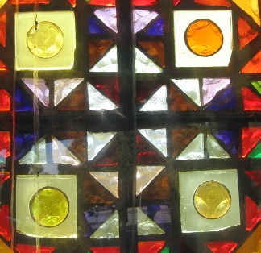

Welcome to the Victorian Branch of InfoSysAnalysis AGM at La Trobe University:
Explore the Campus, Facilities, and Local
Entertainment.

We are thrilled to extend our warmest greetings to all delegates, attendees, and guests. It's our pleasure to invite you to the Annual General Meeting of the Victorian Branch of InfoSysAnalysis, hosted on the picturesque grounds of La Trobe University.
This AGM is not just a meeting; it's an opportunity to unite, exchange ideas, and propel our collective knowledge to new heights. We're dedicated to making this event both informative and enjoyable.
Our website is your gateway to all the information you need for the AGM. Explore the details about the campus, the excellent facilities at your disposal, and the local attractions that await your discovery. We've also provided comprehensive travel and parking information to ensure your journey is smooth.
The Melbourne (Bundoora) campus of La Trobe University is one of its largest and most well-known campuses. Here are directions to the Melbourne campus:
La Trobe University Melbourne (Bundoora) Campus
Address: Kingsbury Dr, Bundoora VIC 3086, Australia
La Trobe University offers ample parking facilities for attendees. Please follow these guidelines for parking during the AGM:
| No. | Facility | Image |
|---|---|---|
| 1. | The Latrobe University Conference Center |
|
| 2. | The Latrobe University Botanical Gardens |
|
| 3. | The Latrobe University Modern Art Gallery |  |
| 4. | The Latrobe University Local Art Gallery |
|
Indulge your taste buds with the delectable offerings from GourmetTakeAway, conveniently located near Latrobe University. Whether you're a student in need of a quick and delicious meal or a visitor exploring the area, our fictional GourmetTakeAway provides a tempting menu of gourmet delights to satisfy your cravings. Enjoy the convenience of gourmet cuisine in this fictional location, just a stone's throw away from the university campus.
Discover a culinary oasis at GourmetTakeAway, conveniently situated in the vicinity of Latrobe University. Immerse yourself in a world of exquisite flavors, where every dish is a masterpiece. Whether you're a busy student seeking a savory meal or a visitor looking to tantalize your taste buds, our fictional GourmetTakeAway offers an enticing menu of gourmet delights. Savor the convenience of exceptional cuisine in a location that's a delicious escape from the everyday.
Embark on a gastronomic journey at GourmetTakeAway, a tantalizing culinary destination located in the vicinity of Latrobe University. Our fictional establishment beckons you to explore a world of flavors, where every bite is a work of art. Whether you're a student on the go or a visitor eager to experience a taste sensation, our GourmetTakeAway offers a diverse menu of gourmet treasures. Satisfy your cravings and relish the convenience of exceptional cuisine in a location that promises a delectable escape from the ordinary.

Stay organized and on top of your schedule with TimelyReminder, a fictional location designed to cater to your time management needs near Latrobe University. Whether you're a student, a faculty member, or a visitor looking to optimize your time, TimelyReminder offers a range of innovative tools and services to help you stay punctual and efficient. Embrace the convenience of effective time management in this fictional location, perfectly situated to enhance your daily routine.